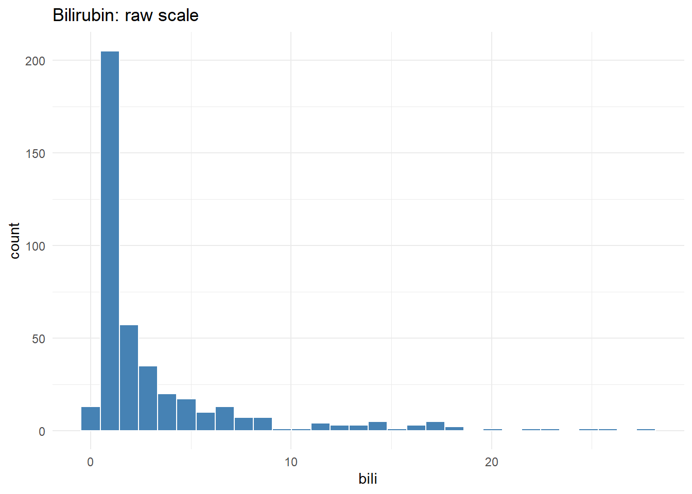
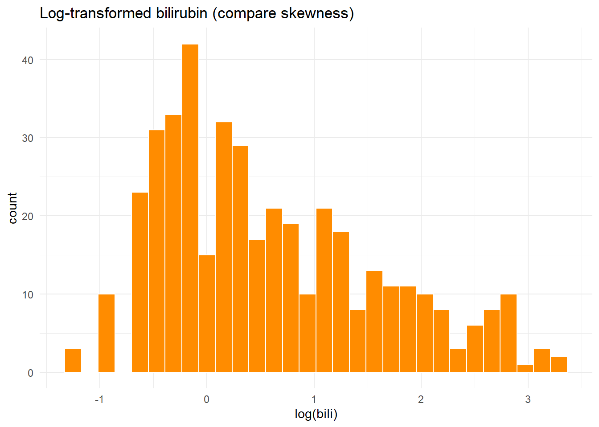
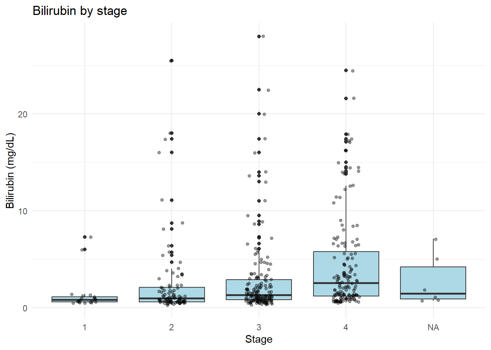

1Descriptive Statistics & Exploratory Data Analysis
This session teaches practical descriptive statistics and exploratory data analysis (EDA) with a focus on interpretation for clinical research. Each section shows when to use the method, a short code demo, how to read the output, and a short exercise for practice.
1.1 Learning outcomes
Compute and report descriptive summaries (means, medians, IQRs, and missingness).
Visualize distributions with histograms, boxplots, and density plots.
Choose reasonable transformations and explain their clinical relevance.
Produce a short, clinician-friendly interpretation of descriptive results.
1.2 When to use EDA
Use EDA as the first analytic step to understand data quality, detect missingness and outliers, and choose reasonable transformations or models. Good EDA prevents common modeling mistakes and grounds interpretation in the actual data.
1.3 Short code demo
# load and clean a canonical clinical datasetpbc <- survival::pbc %>%as_tibble() %>% janitor::clean_names() %>%mutate(stage =factor(stage, levels =1:4))# counts by stagepbc %>%count(stage)
# histogram with log-transform comparisonggplot(pbc, aes(x = bili)) +geom_histogram(bins =30, fill ="steelblue", color ="white") +labs(title ="Bilirubin: raw scale") +theme_minimal()

ggplot(pbc %>%filter(!is.na(bili)), aes(x =log(bili))) +geom_histogram(bins =30, fill ="darkorange", color ="white") +labs(title ="Log-transformed bilirubin (compare skewness)") +theme_minimal()

# boxplot by stageggplot(pbc %>%filter(!is.na(bili)), aes(x =factor(stage), y = bili)) +geom_boxplot(fill ="lightblue") +geom_jitter(width =0.15, alpha =0.4, size =1.2) +labs(x ="Stage", y ="Bilirubin (mg/dL)", title ="Bilirubin by stage") +theme_minimal()

1.5 How to explain the output (teacher notes)
What to report: show counts, an estimate of central tendency (median if skewed), and a measure of spread (IQR) for each group.
What it means: for example, higher median bilirubin in later stages suggests worsening liver function; emphasize clinical units and whether differences are clinically meaningful, not just statistically significant.
Implications: use these findings to guide choice of transformations (e.g., log-transform skewed labs), adjust sample-size expectations, and plan covariate adjustment in regression.
1.6 Short exercise
Compute mean, median, IQR and the proportion missing for bili by stage. Write one brief interpretation (2–3 sentences) focusing on clinical relevance.
Exercise 1 — Solution
Run the solution code directly in an R session or within Quarto.
#' ---#' title: "Exercise 1 - solution"#' author: "Paul Blanche"#' output: pdf_document#' fontsize: 12pt#' ---#'## ----setup, include=FALSE-----------------------------------------------------knitr::opts_chunk$set(echo =TRUE)rm(list=ls())#'#' ## Question 1#'#' We load the data and have a look a the first lines.## -----------------------------------------------------------------------------load(url("http://paulblanche.com/files/SCD.rda"))d <- SCD # shorter name, just for conveniencehead(d)#'#' We get summary statistics for all variables.## -----------------------------------------------------------------------------summary(d)#'#' The variables HCT, Creat and Hb have missing values.#'#' ## Question 2#'## -----------------------------------------------------------------------------table(d$sex)#' There are 82 women and 94 men.#'## -----------------------------------------------------------------------------table(d$SCD)#' There are 88 subjects with and 88 without Sickle Cell Disease.#'#' ## Question 3#'## ---- fig.height=5------------------------------------------------------------boxplot(d$Psys~factor(d$SCD,levels=c(0,1),labels=c("no","yes")),xlab="Sickle Cell Disease",ylab="Diastolic pressure (mmHg)")#'#'#' **Interpretation:**#'#' * Box:#' + middle line: median Q2 (50%)#' + bottom: first quartile Q1 (25%)#' + top: third quartile Q3 (75%)#' * Whiskers: size is 1.5 times the height of the box, but not exceeding minimum and maximum.#' * Dots: observations beyond whiskers#'#' The overall interpretation seems to make sense: lower values are observed for subjects with SCD (median for SCD patients is approximately Q1 for subjects without SCD).#'#'#' **Note:** some **experienced** students might prefer to use an alternative code, using the packages **dplyr** and **ggplot2**. See appendix for such a code.#'#'#' ## Question 4#' First we create the BMI variable and add it to the data.## -----------------------------------------------------------------------------d$BMI <- d$weight/(d$height/100)^2#' Note that we divide the height by 100 because we want the height unit to be meters, not centimeters.## ---- fig.height=5------------------------------------------------------------hist(d$BMI,xlab="Body Mass Index",main="")#'#' BMI does not look normally distributed because the distribution does not seem symmetric around the mean/median.#'#' Mean of BMI:## -----------------------------------------------------------------------------mean(d$BMI)#' Sdandard deviation of BMI:## -----------------------------------------------------------------------------sd(d$BMI)#' Minimum of BMI:## -----------------------------------------------------------------------------min(d$BMI)#' Maximum of BMI:## -----------------------------------------------------------------------------max(d$BMI)#' First and third quartiles of BMI (25% and 75%):## -----------------------------------------------------------------------------quantile(d$BMI)#'#' or:## -----------------------------------------------------------------------------quantile(d$BMI, 0.25)quantile(d$BMI, 0.75)#'#'#' Median of BMI has already been computed (50% above). Alternatively:## -----------------------------------------------------------------------------median(d$BMIgroup <-cut(d$BMI,breaks=c(0,18.5,25,30,Inf),include.lowest=TRUE,right=FALSE)table(d$BMIgroup)#' Because the variable is far from being normally distributed, it is generally more informative to report the median and the first and third quartiles rather than mean and sd.#' We now compute the frequencies for each BMI group.## -----------------------------------------------------------------------------#' We observe 32 subjects "underweight", 112 "normal", 23 "overweight" and 9 "obese". Graphically:## ---- fig.height=4------------------------------------------------------------barplot(table(d$BMIgroup),xlab="Body Mass Index",ylab="Number of subjects")#'#' We now do the same, but separately for subjects with and without SCD. However, we now report proportions instead of counts, to facilitate the comparison between the two groups. We make sure that the y-axis is the same for both plots to facilitate the comparison.## ---- fig.width=10------------------------------------------------------------par(mfrow=c(1,2))barplot(table(d$BMIgroup[d$SCD==0])/sum(table(d$BMIgroup[d$SCD==0])),main="No SCD",ylim=c(0,0.7))barplot(table(d$BMIgroup[d$SCD==1])/sum(table(d$BMIgroup[d$SCD==1])),main="SCD",ylim=c(0,0.7))#' We observe somewhat lower BMI for subjects with SCD (less overweight and less obese subjects).#'#' ## Question 5#' We compute the mean and sd for subjects with (SCD=1) and without (SCD=0) SCD.## -----------------------------------------------------------------------------mean(d$Pdias[d$SCD==1])mean(d$Pdias[d$SCD==0])sd(d$Pdias[d$SCD==1])sd(d$Pdias[d$SCD==0])#'#'#'#' Next, we use the t.test function to compute 95% confidence interval for the mean diastolic pressure in the two populations of subjects with and without SCD.## -----------------------------------------------------------------------------t.test(d$Pdias[d$SCD==1])t.test(d$Pdias[d$SCD==0])#' The confidence intervals are [60.3;63.3] and [67.8;72.4] for subjects with and without SCD, respectively. They do not overlap, hence we can conclude to a significant difference in mean diastolic pressure between the two groups (at the usual 5% level for the type-I error control).#'#' We now compute the 95% **prediction** interval for the diastolic pressure in the two populations of subjects with and without SCD.## -----------------------------------------------------------------------------predict(lm(d$Pdias[d$SCD==0]~1),interval="prediction")[1,]predict(lm(d$Pdias[d$SCD==1]~1),interval="prediction")[1,]#' Under the assumption that the diastolic pressure is (approximately) normally distributed in each population (which should be checked using e.g. a QQplot!) then we can expect that (close to) 95% of the subjects without SCD (and similar to that of the study) have a diastolic pressure between 48.4 and 91.7. For subjects with SCD, between 47.9 and 75.7.#'#'#' ## Question 6#'## -----------------------------------------------------------------------------t.test(d$Psys[d$SCD==1])t.test(d$Psys[d$SCD==0])#' The confidence intervals are [115.9;120.8] and [124.1;129.7]. They do not overlap, hence a significant difference.## -----------------------------------------------------------------------------t.test(d$Psys[d$SCD==1& d$sex==2])t.test(d$Psys[d$SCD==0& d$sex==2])#' The confidence intervals are [113.9;119.9] and [119.9;127.2]. They do overlap (although very little), hence **we cannot rigorously say whether there is a significant difference**. We need to perform a two-sample t-test to rigorously conclude (see course Day 2).#'#' We now produce a dotplot to display the individual observations.## ---- fig.width=5-------------------------------------------------------------stripchart(d$Psys~factor(d$SCD,levels=c(0,1),labels=c("No SCD","SCD")),vertical=TRUE,method="jitter",xlab="",ylab="Systolic blood pressure (mmHg)",pch=19,col=c("forestgreen","red"))#'#' Now we produce QQplots for each group.## ---- fig.width=10------------------------------------------------------------par(mfrow=c(1,2))qqnorm(scale(d$Psys[d$SCD==1& d$sex==2]),main="SCD")abline(0,1,col="red",lty=2,lwd=3)qqnorm(scale(d$Psys[d$SCD==0& d$sex==2]),main="No SCD")abline(0,1,col="red",lty=2,lwd=3)
Hint: use group_by(stage) and summarize(..., na.rm = TRUE) to compute summaries; sum(is.na(bili))/n() gives proportion missing.
1.7 Packages used
dplyr, janitor, survival, ggplot2 (for plotting in follow-up exercises)
Example scripts: dev_code_data/excercise1.R (descriptive examples).
Chang, Winston. 2018. R Graphics Cookbook: Practical Recipes for Visualizing Data. O’Reilly Media. https://r-graphics.org/.
R Core Team. 2023. R: A Language and Environment for Statistical Computing. R Foundation for Statistical Computing. https://www.R-project.org/.
Wickham, Hadley. 2016. Ggplot2: Elegant Graphics for Data Analysis. Springer-Verlag New York. https://ggplot2-book.org/.
Wickham, Hadley, and Garrett Grolemund. 2017. R for Data Science: Import, Tidy, Transform, Visualize, and Model Data. O’Reilly Media, Inc. https://r4ds.had.co.nz/.